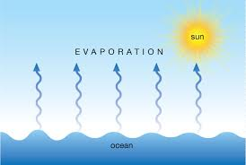
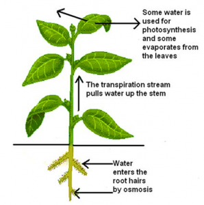
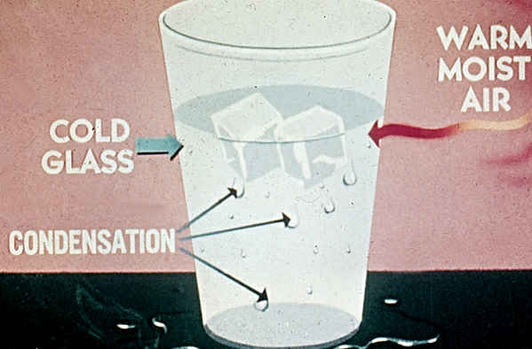
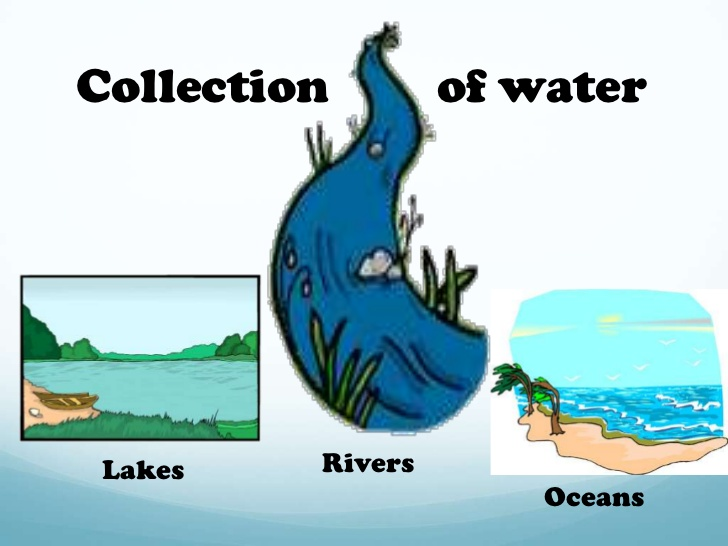

The earth has a limited amount of water. That water keeps going around and around and so on in what we call the "Water Cycle". This cycle is made up of a few main parts:
Evaporation (and transpiration)
Condensation
Precipitation
Collection
Evaporation:
Evaporation is when the sun heats up water in rivers or lakes or the ocean and turns it into vapor or steam. The water vapor or steam leaves the river, lake or ocean and goes into the air.

Transpire
People perspire (sweat) and plants transpire. Transpiration is the process by which plants lose water out of their leaves. Transpiration gives evaporation a bit of a hand in getting the water vapor back up into the air.

Condensation:
Water vapor in the air gets cold and changes back into liquid, forming clouds. This is called condensation.
You can see the same sort of thing at home... Pour a glass of cold water on a hot day and watch what happens. Water forms on the outside of the glass. That water didn't somehow leak through the glass! It actually came from the air. Water vapor in the warm air, turns back into liquid when it touches the cold glass.

Collection:
When water falls back to earth as precipitation, it may fall back in the oceans, lakes or rivers or it may end up on land. When it ends up on land, it will either soak into the earth and become part of the “ground water” that plants and animals use to drink or it may run over the soil and collect in the oceans, lakes or rivers where the cycle starts
all over again.

^Click for more knowledge! Try to find all 7 facts!